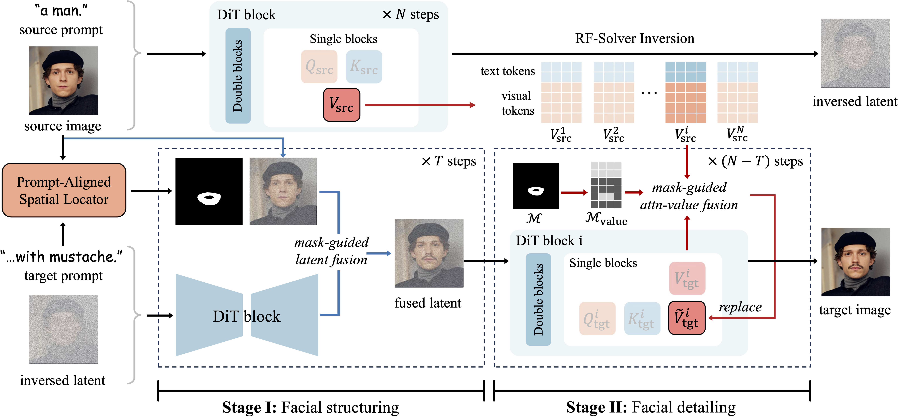

This page was built using the Academic Project Page Template which was adopted from the Nerfies project page.
You are free to borrow the of this website, we just ask that you link back to this page in the footer.
This website is licensed under a Creative
Commons Attribution-ShareAlike 4.0 International License.

Abstract
Text-driven portrait editing technologies exhibit broad application prospects together with great challenges. Existing works struggle to keep a good balance between reconstruction fidelity and editing flexibility. To clearly formulate the problem, we claim that an ideal text-driven portrait edit should have precise editing localization and appropriate content modification. To achieve these criteria, we propose Flux-Sculptor, a Flux-based framework for precise text-driven portrait editing. Our framework uses a Prompt-Aligned Spatial Locator (PASL) to identify relevant editing regions and a Structure-to-Detail Edit Control (S2D-EC) strategy to spatially guide the denoising process via sequential mask-guided fusion on latent and attention value. Extensive experiments show that Flux-Sculptor outperforms existing methods in both rich-attribute editing and facial information preserving, making it a powerful candidate for the practical portrait editing application.
Different attributes face editing using Flux-Sculptor
Text-based portrait editing results of Flux-Sculptor. We apply eight text prompts focusing on different attributes to edit two central portraits. As shown, our method effectively follows the text prompts to achieve diverse attribute modifications while maintaining visual harmony, naturalness, and identity preservation.
Flux-Sculptor pipeline

Flux-Sculptor can achieve good performance comparing with other methods